<!doctype html>
<html lang="en">
<head>
<meta charset="utf-8">
<meta name="viewport" content="width=device-width, initial-scale=1">
<title>EIDOLON — Jihun Kim</title>
<meta name="description" content="“EIDOLON” is a speculative branding project that explores how identity, communication, and perception might evolve in a post-technological society. As">
<link rel="stylesheet" href="../style.css">
</head>
<body>
<header class="site-header">
  <a href="../index.html">Jihun Kim</a>
  <nav><a href="../index.html#work">Work</a><a href="../info.html">Info</a><a href="#contact">Contact</a></nav>
</header>
<section class="detail-head">
  <h1>EIDOLON<br><span class="view">Branding<br>2026</span></h1>
  <div class="desc"><p>“EIDOLON” is a speculative branding project that explores how identity, communication, and perception might evolve in a post-technological society. As humanity returns to nature after the collapse of advanced technology, three regions emerge, each shaped by different ecological systems: moss, fungi, and crystal. Through a unified visual identity systemincluding logos, custom typefaces, flags, and identification artifactsthe project investigates how shared symbols and cultural narratives can construct entirely different realities from a common origin.</p></div>
</section>
<main class="slices">
  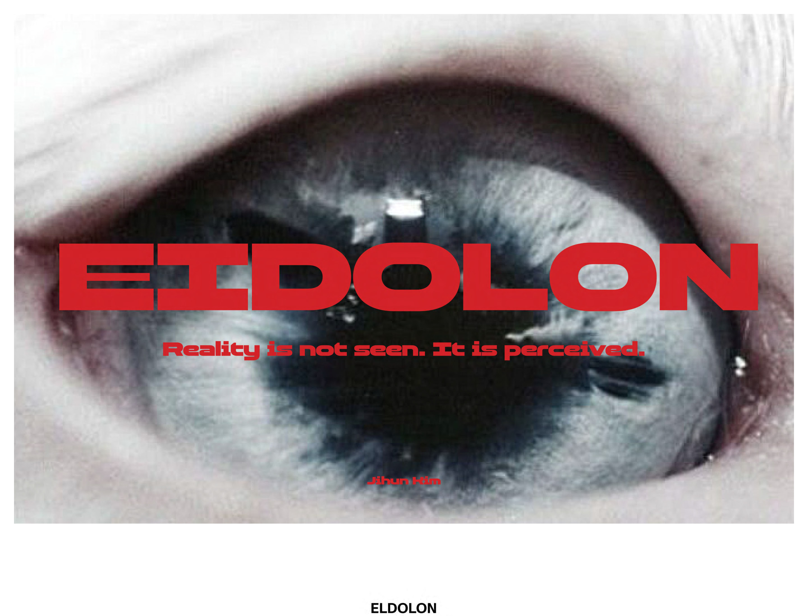
  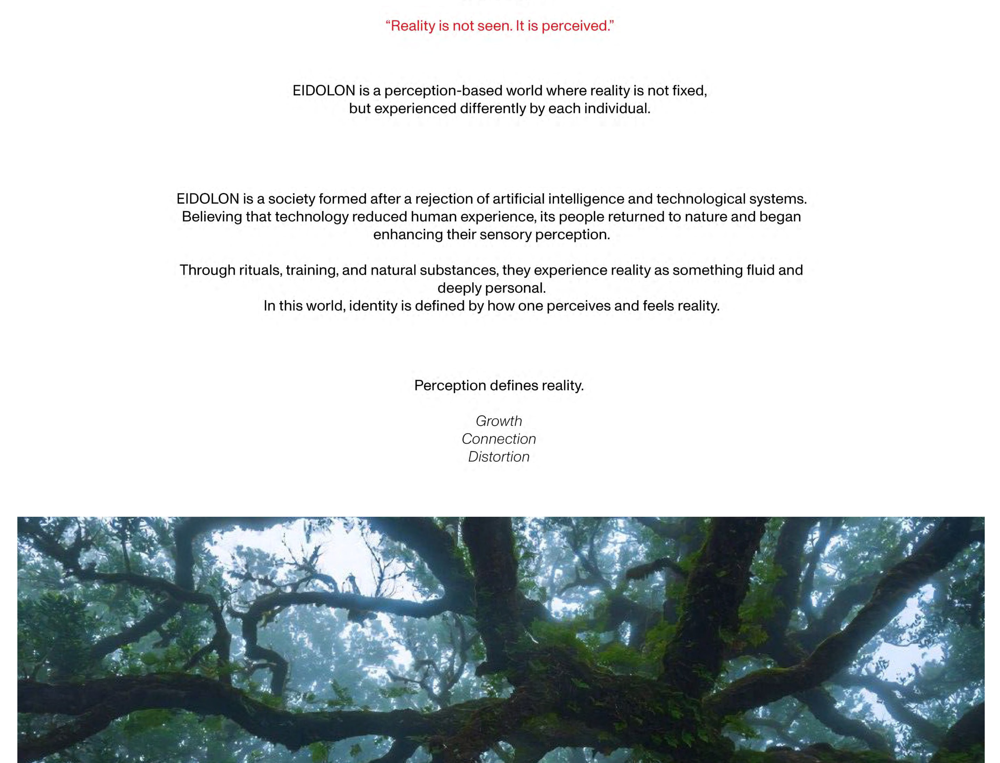
  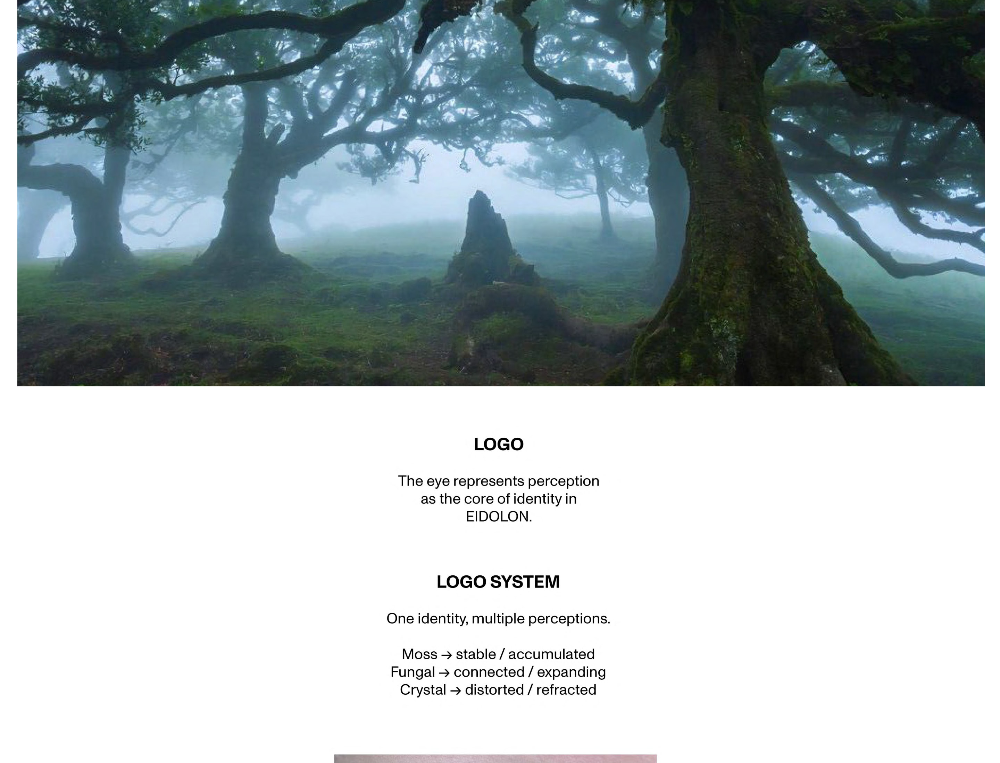
  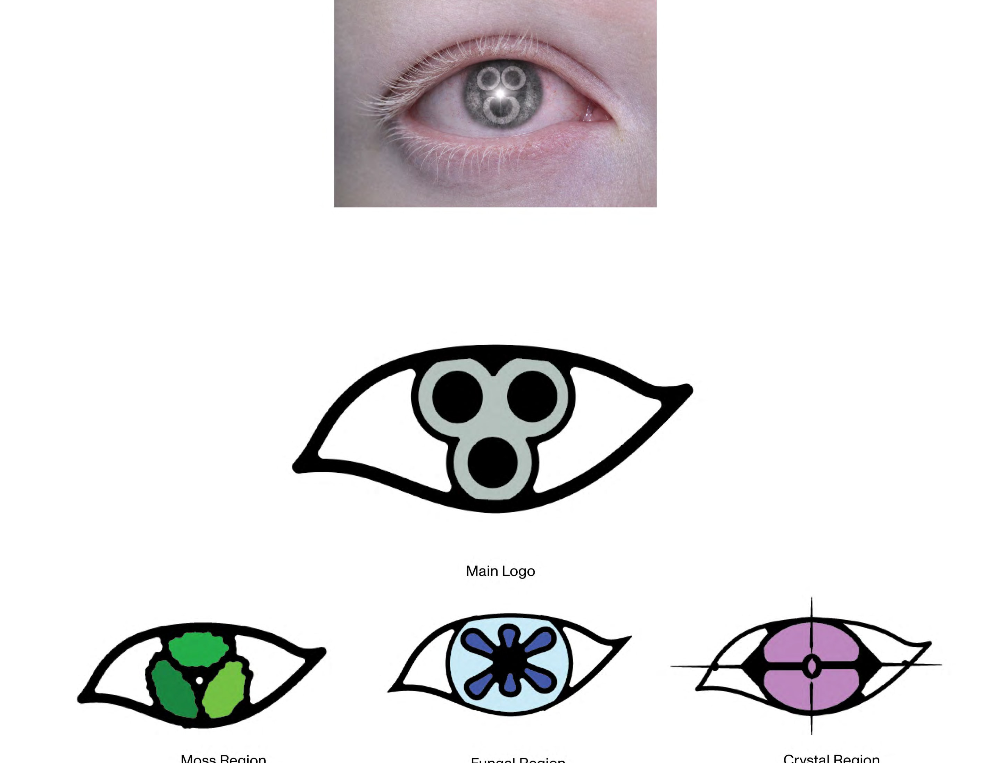
  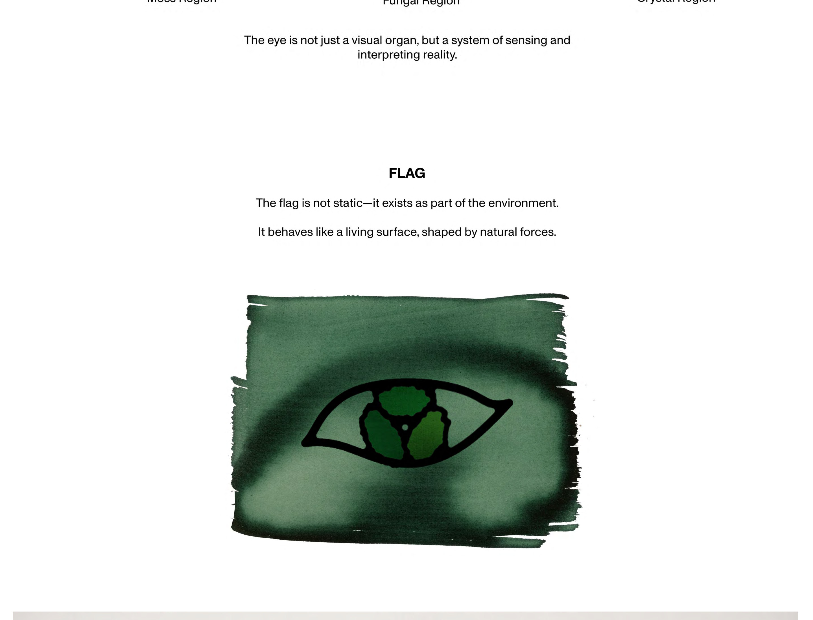
  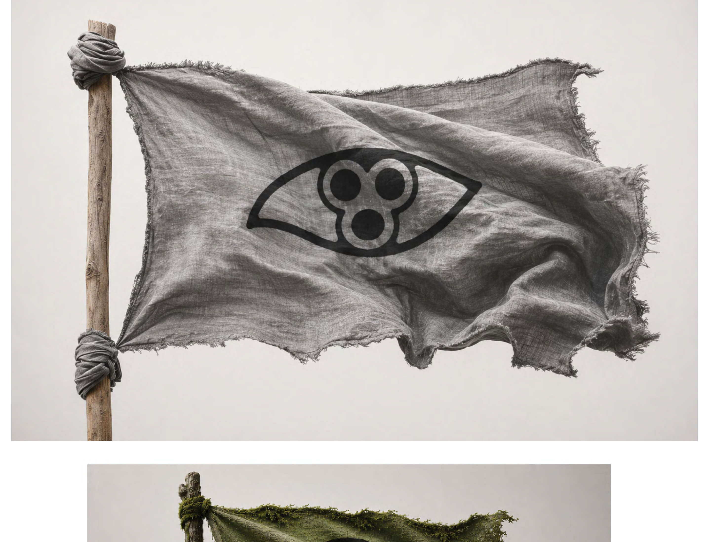
  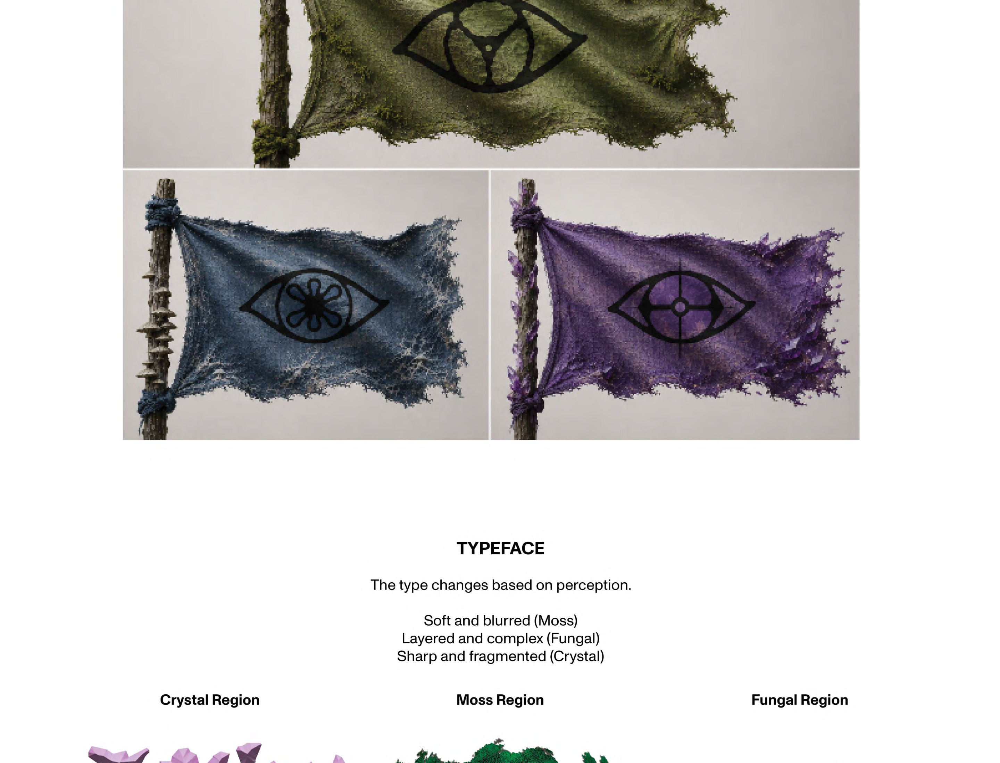
  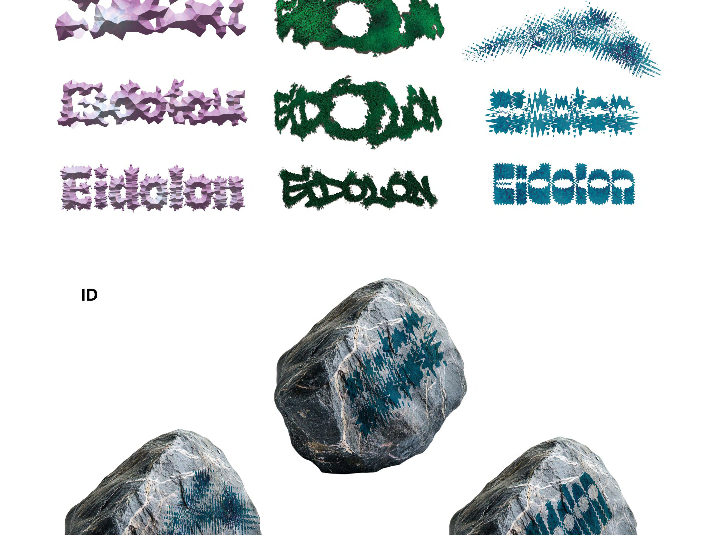
  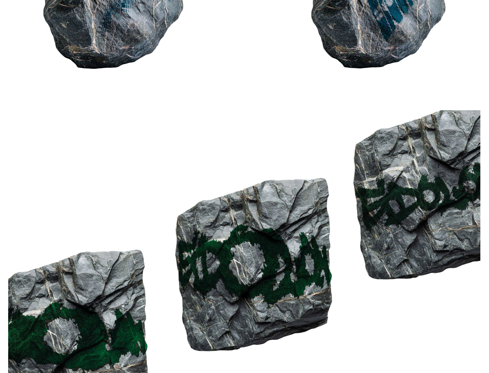
  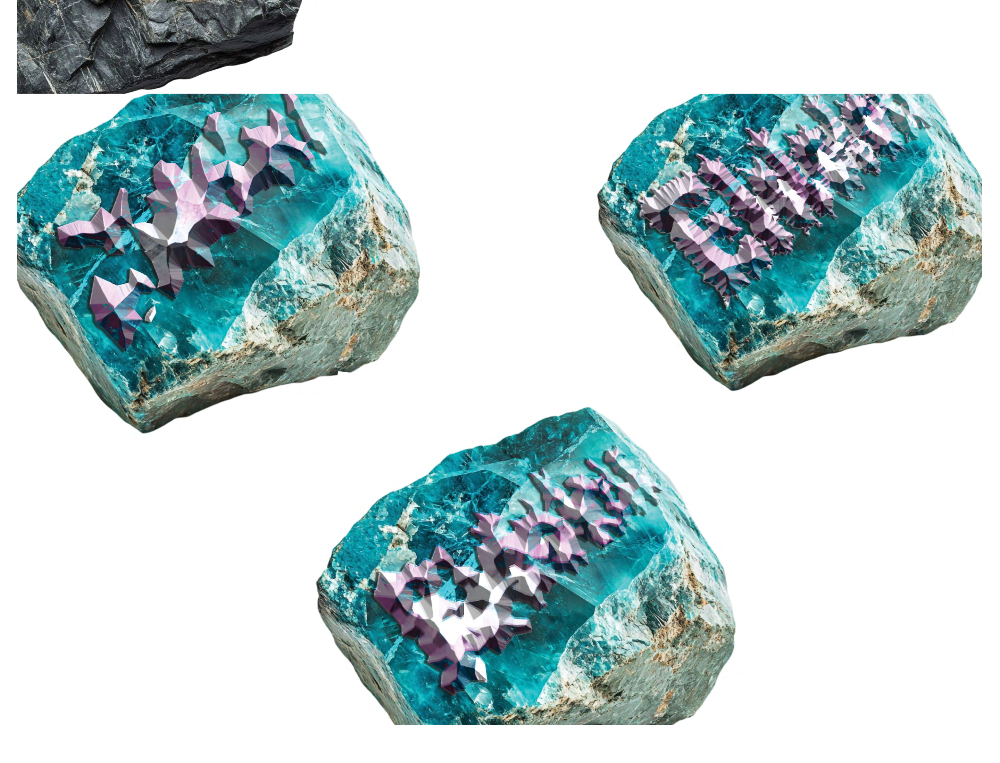
  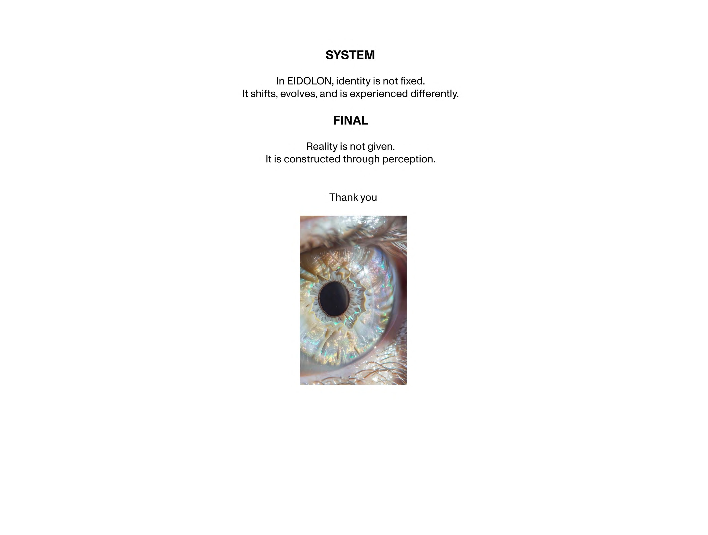
</main>
<nav class="pager">
  <a href="selfiside.html">← Selfiside</a>
  <a href="../index.html">Index</a>
  <a href="lucid-dream.html">Lucid Dream →</a>
</nav>
<footer class="footer" id="contact">
  <span class="links"><a href="mailto:kimmic0218@gmail.com">kimmic0218@gmail.com</a>
      <a href="https://www.linkedin.com/in/jihun-kim-4a79a1389" target="_blank" rel="noopener">LinkedIn</a>
      <a href="../info.html">Info</a></span>
  <small>© 2026 Jihun Kim</small>
</footer>
</body>
</html>
